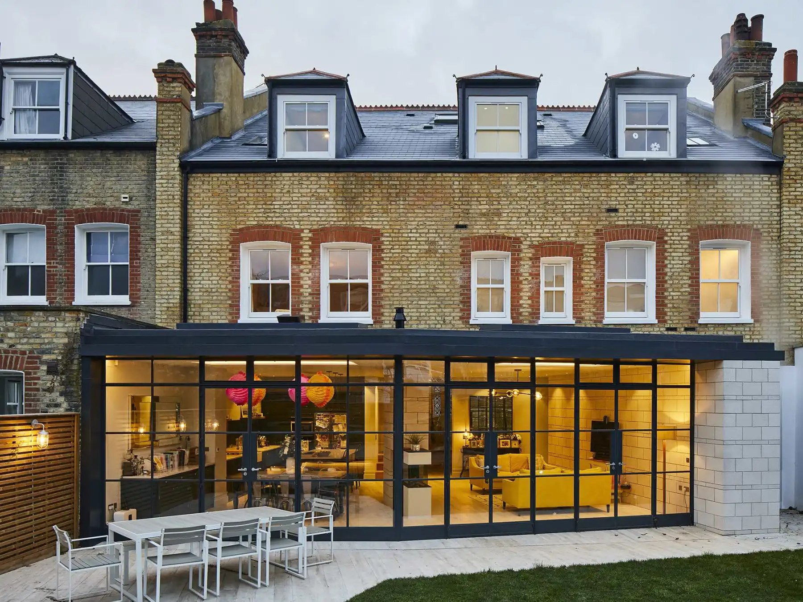
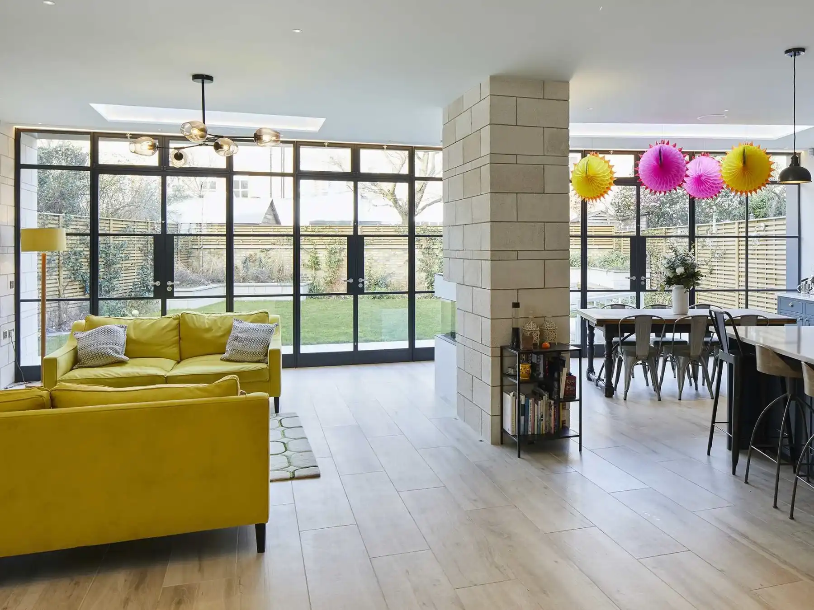

KJA Services are an approved Crittall distributor serving West London, supplying and installing genuine Crittall steel doors, screens and windows throughout Chelsea, Chiswick, Fulham, Kensington, Notting Hill and Richmond. With over 25 years of experience, our team works with homeowners, architects and contractors to deliver bespoke steel glazing solutions that complement both period and contemporary properties.
We have been supplying and installing Crittall® steel doors, screens and windows across the UK for over 25 years, with West London being one of the areas we regularly serve. We offer free site surveys and the same award winning service enjoyed by clients nationwide. Our experience delivering projects across the country means homeowners, architects and contractors in West London benefit from genuine specialist expertise, exceptional attention to detail and highly competitive pricing.


Although our head office is based in Yorkshire, our surveying and installation teams work throughout London and the M25 every week. Combined with direct supply from the Crittall factory in Essex, this allows us to deliver the same responsive service, attention to detail and project management expected from a specialist local contractor.